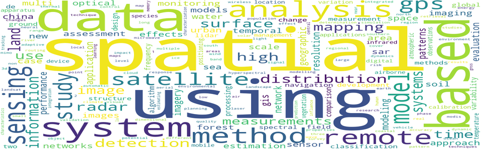
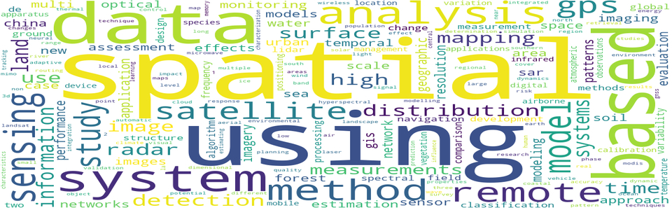

Workshop Program
|
Zoom Link - https://ornl.zoomgov.com/webinar/register/WN_hIBb-lf3Sgq8UY9sfuRsPw Register in advance for the workshop. After registering, you will receive a confirmation email containing information about joining the webinar. |
||
|
Session I - 9:00am-12:00 pm (EST) (UTC: 2pm – 5pm) |
||
|
Time |
Speaker |
Presentation title |
|
9:00 - 9:10 |
Chair |
Opening Remarks |
|
9:10 - 10:00 |
Dr. Jiangping Zhou |
Keynote 1: Abrupt Changes, Institutional Reactions, and Adaptive Behaviors
|
|
10:01 - 10:30 |
Kamil Raczycki |
Transfer Learning Approach to Bicycle-sharing Systems' Station Location Planning Using OpenStreetMap Data
|
|
10:31 – 11:00 |
Christian Koetsier |
Federated Cooperative Detection of Anomalous Vehicle Trajectories at Intersections
|
|
11:01 - 11:20 |
Mankin Law |
A Geospatial Data Fusion Framework to Quantify Variations in Electric Vehicle Charging Demand
|
|
11:21 – 11:40 |
Diya Li |
Urban Computing Cyberinfrastructure: Visualizing Human Sentiment using Social Media and Augmented Reality |
|
LUNCH BREAK (11:41 – 12:40pm EST) (UTC: 4:41pm – 5:40pm)
|
||
|
Session II - 12:41 – 4:40pm (EST) (UTC: 5:41pm – 9:40pm) |
||
|
Time |
Speaker |
Presentation title |
|
12:41 – 1:40 |
Dr. David Fortune |
Keynote 2: Operational Digital Twins: Bringing the Public into Smart, Resilient Water Services
|
|
1:41 – 2:10 |
Naser Ahmed |
Predicting Urban Flooding Susceptibility of Public Transit Systems Using Machine Learning Approaches: A Case Study of the Largest City in Canada
|
|
2:11 - 2:40 |
Prativa Sharma |
A Machine Learning Approach to Flood Severity Classification and Alerting
|
|
2:41 - 3:10 |
Junjie Zhao |
ST-CCN-PM2.5: Fine-Grained PM2.5 Concentration Prediction via Spatiotemporal Causal Convolutional Network
|
|
3:11 – 4:30 |
Panel: Post COVID Smart and Resilient Cities – How to Achieve Net Zero and Climate Justice?
Panellists: Therese McAllister, Yi Qiang, Edward J. Oughton, Wilfred Pinfold |
|
|
4:31 – 4:45 |
Closing Remarks |
|
Keynote speakers and panelists

David Fortune
David recently retired as Vice President of Innovation at Innovyze with responsibilities for product and company strategy. He is now a postgraduate researcher at the University of Exeter, working on transformation of water services using operational digital twins. He has lead the design, development and sale of many commercially and technically successful software systems. David specializes in water management applications, including asset management, hydraulic modelling, real-time operations, and digital twins. Previously he worked in defence industries. David is a mathematician and software engineer, and has contributed to many water research projects. He has worked on modelling applications in Europe, the USA, India and China. David is a Chartered Member of the Institution of Water and Environmental Management (C.WEM MCIWEM) and sat on the Board of the OpenMI Association which promoted the benefits and uptake of integrated environmental modelling. He contributes to the Smart Water Networks (SWAN) digital twin groups and supports the development of the SWMM open source urban drainage modelling package through the Center for Infrastructure Modeling and Management (CIMM).

Dr. Therese McAllister
Dr. Therese McAllister is the Community Resilience Group Leader and Program Manager in the Engineering Laboratory at the National Institute of Standards and Technology (NIST). She is also the Technical Point of Contact for the NIST-funded Center for Risk-Based Community Resilience Planning, led by Colorado State University. She conducts research on community resilience, with a focus on the integrated performance of physical infrastructure and social and economic systems. She co-led detailed structural analyses of the WTC towers and WTC 7, and conducted studies of Hurricane Katrina flooding in New Orleans and Hurricane Sandy flood effects on infrastructure systems.

Dr. Edward Oughton
Dr. Edward Oughton received the M.Phil. and Ph.D. degrees from Clare College, University of Cambridge, U.K., in 2010 and 2015, respectively. He later held research positions at both Cambridge and Oxford. He is currently an Assistant Professor with George Mason University, Fairfax, VA, USA, developing open-source research software to analyze digital infrastructure. He received the Best Paper Award 2019 from the Society of Risk Analysis, the TPRC Charles Benton Early Career Award 2021 and runner-up in the Lloyd’s Science of Risk Prize 2021.

Dr. Yi Qiang
Dr. Yi Qiang is an Assistant Professor at the School of Geosciences, University of South Florida. He also serves as an Affiliate Graduate Faculty at Department of Geography and Environment at University of Hawaii at Manoa. Dr. Qiang holds a Ph.D. in Geography from Ghent University. His primary research area is in GIScience and spatial data science, with focuses on spatio-temporal modeling, geo-computation/visualization, disaster resilience assessment, and coupled natural and human (CNH) systems. Dr. Qiang leads the Computational Spatial Science for Sustainability Laboratory (COMPASS Lab) at University of South Florida. His current projects include on multi-scale spatio-temporal data modeling, community and infrastructure resilience assessment, sustainable agriculture, and climate/disaster-driven human migration. Dr. Qiang frequently publishes in top journals in GIScience, Geography, and Environmental Sciences. His research projects have been funded from NSF, USDA and NOAA.

Dr. Jiangping Zhou
Dr. Jiangping Zhou’s research focuses on transport/transit systems and land use connections and how to improve the performance of these connections. He investigates usage of alternative modes of travel based on traditional/primary data from sources such as surveys and interviews in the car-dominant context, where promotion of alternative modes of travel is extremely challenging. He also exploits big data from sources such as cellphone usage and smartcard swipes to improve the excess-commuting framework, which used to have nothing to do with big data.